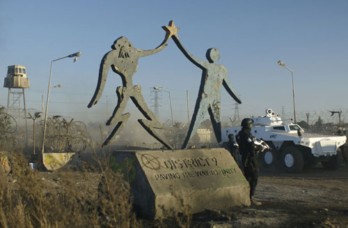

La transformación articula todos los niveles de la película y funciona como su núcleo conceptual. No se limita al cambio físico del protagonista, sino que atraviesa la narrativa, la mirada y el sentido mismo del relato. El proceso de Wikus actúa como catalizador: al desplazarse de una posición de privilegio hacia una de exclusión, su experiencia revela estructuras de poder que antes permanecían invisibles o naturalizadas. Este corrimiento no solo modifica su cuerpo, sino también su forma de percibir el mundo. Al mismo tiempo, el espectador atraviesa su propio proceso de transformación. Lo que inicialmente se presenta como una historia de ciencia ficción se reconfigura progresivamente como una crítica social profunda. Este desplazamiento genera incomodidad, pero también habilita una lectura más compleja y reflexiva. La película plantea así que la identidad no es fija, sino dinámica, y que toda transformación implica una crisis, pero también la posibilidad de construir nuevas formas de empatía y comprensión.